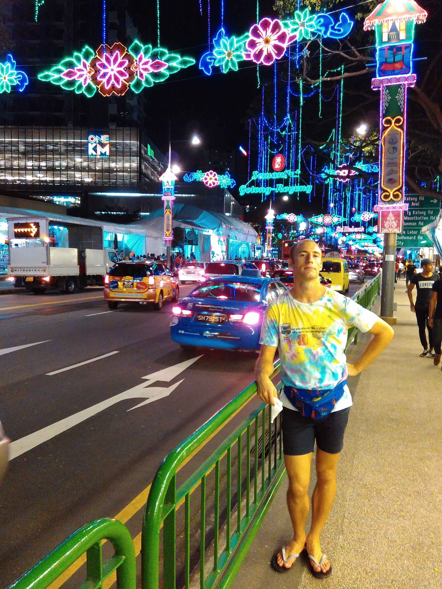

First of all, before I start this post, all I have to say this is the only picture you're getting, since it's the only one I took.

OK, now that that's done, you can stop reading. Or, continue on to exercise those ocular muscles!
Hari Raya is the Malay version of Eid, which marks the end of Ramadan and fasting, and is pretty much one of my favorite celebrations, even though I'm not Muslim. Just to be clear, this outing of ours happened during Ramadan, not the actual day of Hari Raya Puasa, or end of Ramadan. Still, celebrations happen around Singapore's Muslim community because, what better way to end the day than to eat with your homies and fam bam?
Anyway, in the whole month of Ramadan, the Malay folk (I could be more P.C. and say the Muslim-practicing folk, since there are plenty Indian Muslims and Indonesian Muslims, but you get the idea) here will set up a pasar malam, which translate to night market, near Paya Lebar MRT station. This night market is kind of like the ones you get in Taiwan/Taipei, with a lot of people selling street food, a lot of clothes, and spreading good cheer. It also tends to be a lot cleaner here just due to Singaporean regulations, but still, that doesn't mean the Muslim spirit isn't in the air. So many aunties and uncles selling street food and so many different varieties to try. The pasar spans for quite a while, and you get exhausted winding through the shops and seeing what there is. We'll turn a corner, and there'll be a whole other block of things for sale.
You get to see Muslim folk eating together as a family on the ground and breaking fast for the day, and you get this real strong sense of community around the celebration. It's something that I can't quite explain, but if you're in that atmosphere and you can see what I mean. Actually, the pasar malam I would say is one of the unique cultural things that Singapore has to offer. It's not unique to here, but it's one of the great things that the folks who built Singapore brought here. There used to be a lot more, but as regulations have cracked down it's now a more 'structured' affair. These pasar malams are essentially a huge, popup outdoor hawker center with additional things like clothes and trinkets for sale. It contrasts sharply with the organized, stern office buildings nearby and is just thriving with culture. What a strong testament to Islam faith that you're not used to seeing in the West.
This place is also where the majority of Malay folk turn up. Seriously, I haven't seen that many Malay folk together in Singapore, only in Malaysia. And, what's particularly interesting -- perhaps not particular since I believe the reasoning is obvious -- is that you will largely only see ethnic Malay folk out, along with foreigners. You'll seldom see Chinese faces out there. But, I guess the same could be said for Chinese New Year. And, the same for Thaipusam as well -- you just don't tend to see the non-celebrating ethnic groups out there because these holidays are either secular or meaningless to them. As a foreigner then, you get to enjoy all of them as new, cultural things! Yay for tourism.
Now, Christmas on the other hand here, has a whooooole other meaning for all three of them. Blog about that later.